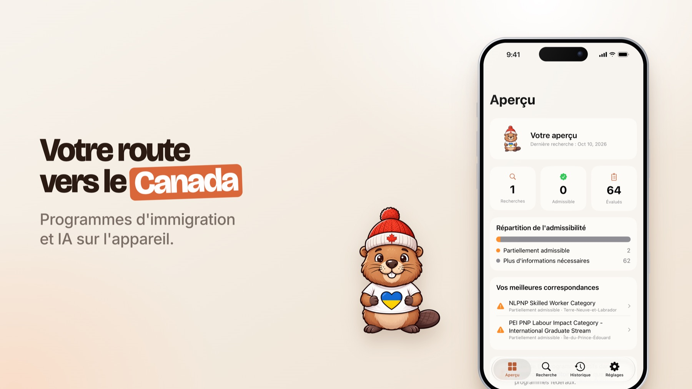
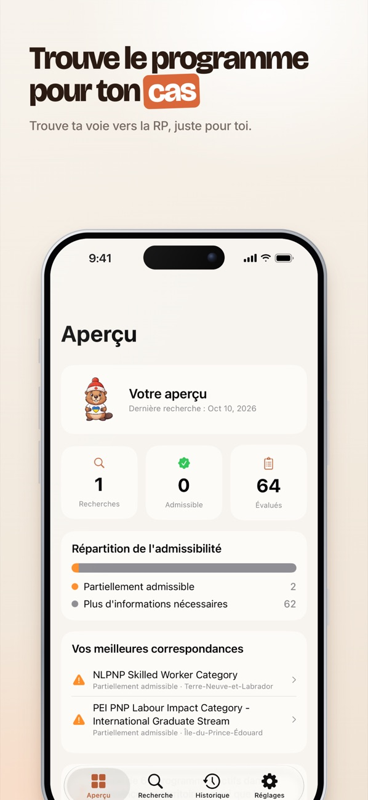
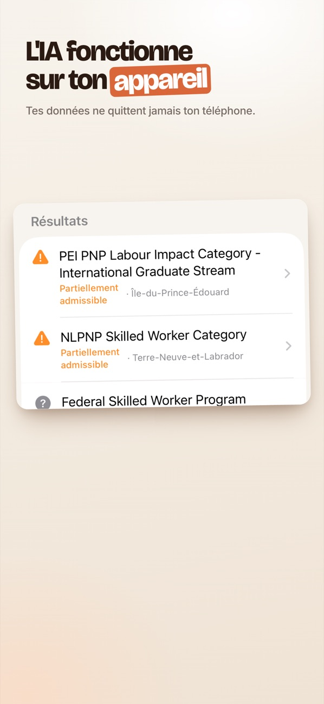
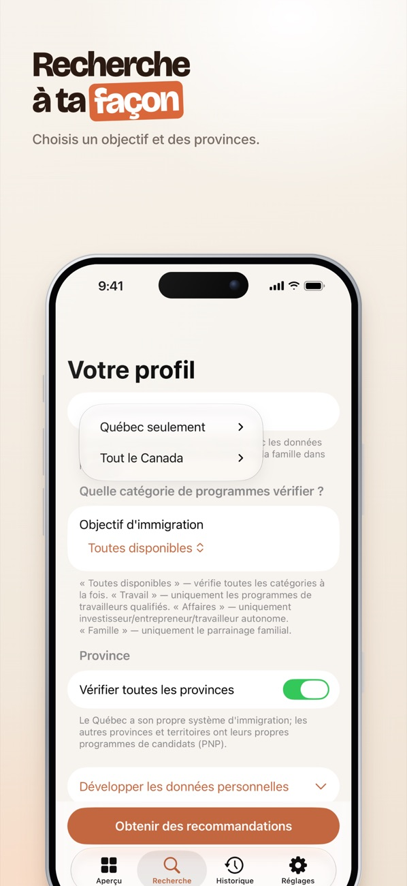
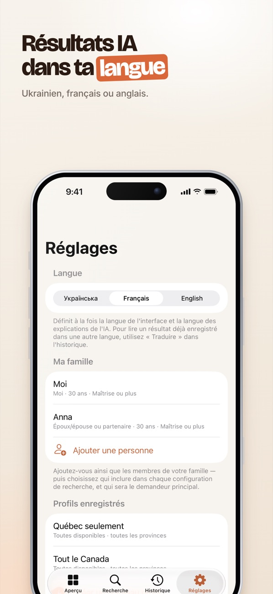

MyPR — vérifiez à quels programmes d'immigration canadiens vous êtes admissible

Vérifiez à quels programmes d'immigration canadiens vous êtes réellement admissible — avant de réserver une consultation payante. Toute l'analyse se fait sur votre appareil.
Bientôt sur l'App Store
Ce que fait MyPR
◎ Un verdict pour chaque programme
- Admissible / partiellement / non admissible
- Une explication claire du résultat
- Les exigences manquantes et les prochaines étapes générales
🍁 Tout le Canada
- Programmes fédéraux
- Volets du Québec
- Le PCP de chaque province et territoire
🔒 La confidentialité d'abord
- L'analyse se fait sur votre appareil
- Aucun serveur — vos données ne sont jamais transmises
- Fonctionne même sans connexion Internet
👨👩👧 Toute la famille & 3 langues
- Liste commune et configurations de recherche
- Interface en ukrainien, anglais et français
- Traduisez un résultat enregistré à tout moment
Aperçu de l'application




MyPR est un outil d'auto-évaluation informatif, et non un avis juridique ou une décision officielle. MyPR n'est affilié ni au gouvernement du Canada, ni au Québec, ni à aucun organisme officiel, et ne constitue pas un canal officiel de demande. Les critères des programmes changent ; vérifiez toujours auprès des sources officielles (canada.ca, site du MIFI du Québec, pages des programmes provinciaux) ou d'un consultant en immigration agréé.